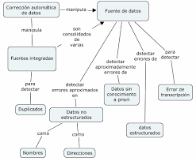
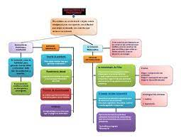

Marco conceptual del problema
Definición 1:
Se entiende la representación general de toda la información que se maneja en el proceso de investigación.
Definición 2:
Se llama marco conceptual o marco teórico a la recopilación, sistematización y exposición de los conceptos fundamentales para el desarrollo de una investigación, sea en el área científica o en el área humanística. Se entiende así que el marco conceptual es una parte del trabajo de investigación o tesis.
Antecedentes
Se trata de la segunda acepción del Diccionario de la RAE: acción, dicho o circunstancia que sirve para comprender o valorar hechos posteriores.
Son todos aquellos trabajos de investigación que preceden al que se está realizando, pero que además guarda mucha relación con los objetivos del estudio que se aborda. Es decir, son los trabajos de investigación realizados, relacionados con el objeto de estudio presente en la investigación que se está haciendo.
Justificación.
En la actualidad, el mundo se encuentra en constante evolución y cada vez son más las actividades y procesos que se realizan a través de la tecnología y la informática. La programación se ha convertido en una herramienta fundamental en este ámbito, y su conocimiento es cada vez más valorado en la sociedad actual. Los estudiantes que aprenden estos lenguajes de programación pueden desarrollar habilidades altamente valoradas en la industria, lo que les brinda más oportunidades de empleo y salarios más altos.
En la actualidad, el mundo se encuentra en constante evolución y cada vez son más las actividades y procesos que se realizan a través de la tecnología y la informática. La programación se ha convertido en una herramienta fundamental en este ámbito, y su conocimiento es cada vez más valorado en la sociedad actual. Los estudiantes que aprenden estos lenguajes de programación pueden desarrollar habilidades altamente valoradas en la industria, lo que les brinda más oportunidades de empleo y salarios más altos.
Determinación del problema
Según su punto de vista ¿Cuál es la importancia de la Investigación en todos los tiempos?
La investigación ha sido importante en todos los tiempos, ya que a través de las investigaciones hechas en el mundo y en todos los tiempos, hoy por hoy conocemos y seguimos descubriendo el mundo y lo que nos rodea.
|
|
|
|---|---|
|  |  |